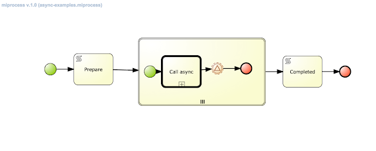
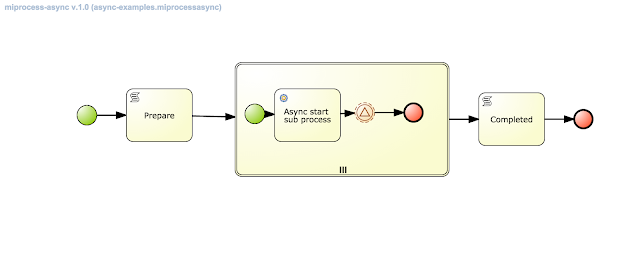
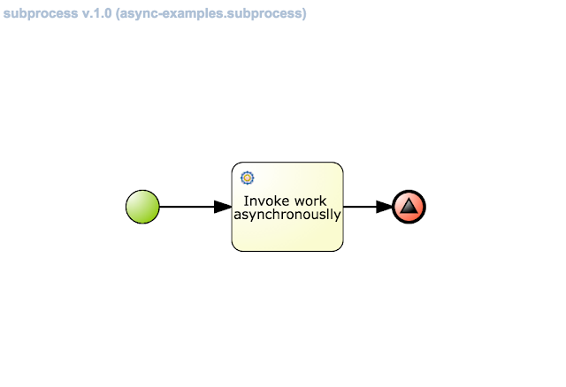
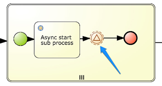
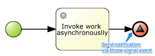

Asynchronous processing with jBPM 6.3
As described in previous article, jBPM executor has been enhanced to provide more robust and powerful execution mechanism for asynchronous tasks. That is based on JMS. So let’s take a look at the actual improvements by bringing this into the real process execution.
The use case is rather simple to understand but puts quite a load on the process engine and asynchronous execution capabilities.
- main process that uses multi instance subprocess to create another process instance to carry additional processing and then awaits for for signal informing about completion of the child process
- one version that uses Call Activity to start sub process
- another that uses AsyncStartProcess command instead of Call Activity
- sub process that has responsibility to execute a job in asynchronous fashion
 |
| Main process with call activity to start sub process |
 |
| Main process with async start process task to start subprocess |
 |
| Sub process that is invoked from the main process |
So what we have here and what’s the difference between two main process versions:
- main process will create as many new process instances as given in collection that is an input to multi instance subprocess – that is driven by process variable that user needs to provide on main process start
- then in one version to create new process instance as part of multi instance it will use Call Activity BPMN2 construct to create process – that is synchronous way
- in the second version, on the other hand, multi instance will use Async Start Process command (via async task) to start process instance in asynchronous way
While these two achieve pretty much the same they do differ quite a lot. First of all, using Call Activity will result in following:
- main process instance will not finish until all sub process instances are created – depending on number of them might be millisecond or seconds or even minutes (in case of really huge set of sub process instances)
- creation of main process and sub process instances are done in single transaction – all or nothing so if one of the subprocess fails for whatever reason all will be rolled back including main process instance
- it takes time to commit all data into data base after creating all process instances – note that each process instance (and session instance when using per process instance strategy) has to be serialized using protobuf and then send to db as byte array, and all other inserts as well (for process, tasks, history log etc). That all takes time and might exceed transaction timeout which will cause rollback again…
When using async start process command the situation is slightly different:
- main process instance will wait only for creating job requests to start all subprocess instances, this is not really starting any process instance yet
- rollback will affect only main process instance and job requests, meaning it is still consistent as unless main process is committed no sub process instances will be created
- subprocess instances are started independently meaning a failure of one instance does not affect another, moreover since this is async job it will be retried and can actually be configured to retry with different delays
- each sub process instance is carried within own transaction which is much smaller and finishes way faster (almost no risk to encounter transaction timeouts) and much less data to be send to data base – just one instance (and session in case of per process instance strategy)
That concludes the main use case here. Though there is one additional that in normal processing will cause issues – single parent process instance that must be notified by huge number of child process instances, and that can happen at pretty much same time. That will cause concurrent updates to same process instance which will result in optimistic lock exception (famous StaleObjectStateException). That is expected and process engine can cope with that to some extent – by using retry interceptor in case of optimistic lock exceptions. Although it might be too many concurrent updates that some of them will exceed the retry count and fail to notify the process instance. Besides that each such failure will cause errors to be printed to logs and by that can reduce visibility in logs and cause some alerts in production systems.
So how to deal with this?
Idea is to skip the regular notification mechanism that directly calls the parent process instance to avoid concurrent updates and instead use signal events (catch in main process instance and throw in subprocess instance).
 |
| Main process catch signal intermediate event |
 |
| Sub process throw signal end event |
But use of signal catch and throw events does not solve the problem by itself. The game changer is the scope of the throw event that allows to use so called ‘External’ scope that utilizes JMS messaging to deliver the signal from the child to parent process instance. Since main process instance uses multi instance subprocess to create child process instances there will be multiple (same number as sub process instances) catch signal events waiting for the notification.
With that signal name cannot be same like a constant as first signal from sub process instance would trigger all catch events and by that finish multi instance too early.
To support this case signal names must be dynamic – based on process variable. Let’s enumerate of
the steps these two processes will do when being executed:
- main process: upon start will create given number of subprocess that will call new process instance (child process instance)
- main process: upon requesting the sub process instance creation (regardless if it’s via call activity or async task) it will pass signal name that is build based on some constant + unique (serialized-#{item}) items that represents single entry from multi instance input collection
- main process: will then move on to intermediate catch signal event where name is again same as given to sub process (child) and await it (serialized-#{item})
- sub process: after executing the process it will throw an event via end signal event with signal name given as input parameter when it was started (serialized-#{item}) and use external scope so it will be send via JMS in transactional way – delivered only when subprocess completes (and commits) successfully
External scope for throw signal events is backed by WorkItemHandler for plug-ability reasons so it can be realized in many ways, not only the default JMS way. Although JMS provides comprehensive messaging infrastructure that is configurable and cluster aware. To solve completely the problem – with concurrent updates to the parent process instance – we need to configure receiver of the signals accordingly. The configuration boils down to single property – activation specification property that limits number of sessions for given endpoint.
In JBoss EAP/Wildfly it can be given as simple entry on configuration of MDB defined in workbench/jbpm console:
In default installation the signal receiver MDB is not limiting concurrent processing and looks like this (WEB-INF/ejb-jar.xml):
<message-driven>
<ejb-name>JMSSignalReceiver</ejb-name>
<ejb-class>org.jbpm.process.workitem.jms.JMSSignalReceiver</ejb-class>
<transaction-type>Bean</transaction-type>
<activation-config>
<activation-config-property>
<activation-config-property-name>destinationType</activation-config-property-name>
<activation-config-property-value>javax.jms.Queue</activation-config-property-value>
</activation-config-property>
<activation-config-property>
<activation-config-property-name>destination</activation-config-property-name>
<activation-config-property-value>java:/queue/KIE.SIGNAL</activation-config-property-value>
</activation-config-property>
</activation-config>
</message-driven>
To enable serialized processing that MDB configuration should look like this:
<message-driven>
<ejb-name>JMSSignalReceiver</ejb-name>
<ejb-class>org.jbpm.process.workitem.jms.JMSSignalReceiver</ejb-class>
<transaction-type>Bean</transaction-type>
<activation-config>
<activation-config-property>
<activation-config-property-name>destinationType</activation-config-property-name>
<activation-config-property-value>javax.jms.Queue</activation-config-property-value>
</activation-config-property>
<activation-config-property>
<activation-config-property-name>destination</activation-config-property-name>
<activation-config-property-value>java:/queue/KIE.SIGNAL</activation-config-property-value>
</activation-config-property>
<activation-config-property>
<activation-config-property-name>maxSession</activation-config-property-name>
<activation-config-property-value>1</activation-config-property-value>
</activation-config-property>
</activation-config>
</message-driven>
That ensure that all messages (even if they are sent concurrently) will be processed serially. By that notifying the parent process instance in non concurrent way ensuring that all notification will be delivered and will not cause conflicts – concurrent updates on same process instance.
With that we have fully featured solution that deals with complex process that requires high throughput with asynchronous processing. So now it’s time to see what results we can expect from execution and see if different versions of main process differ in execution times.
Sample execution results
Following table represents sample execution results of the described process and might differ between different environments although any one is more than welcome to give it a try and report back how it actually performed.
| 100 instances | 300 instances | 500 instance | |
|---|---|---|---|
| Call Activity with JMS executor | 7 sec | 24 sec | 41 sec |
| Async Start Task with JMS executor | 4 sec | 21 sec | 28 sec |
| Call Activity with polling executor (1 thread, 1 sec interval) | 1 min 44 sec | 5 min 11 sec | 8 min 44 sec |
| Async Start Task with polling executor (1 thread, 1 sec interval) | 3 min 21 sec | 10 min | 17 min 42 sec |
| Call Activity with polling executor (10 threads, 1 sec interval) | 17 sec | 43 sec | 2 min 13 sec |
| Async Start Task with polling executor (10 threads, 1 sec interval)” | 20 sec | 1 min 2 sec | 1 min 41 sec |
Conclusions:
as you can see, JMS based processing is extremely fast compared to polling based only. In fact the fastest is when using async start process command for starting child process instances. The difference increases with number of sub process instances to be created.
From the other hand, using polling based executor only with async start process command is the slowest, and that is expected as well, as all start process commands are still handled by polling executor which will not run fast enough.
In all the cases the all processing completed successfully but the time required to complete processing differs significantly.
If you’re willing to try that yourself, just downloaded 6.3.0 version of jBPM console (aka kie-wb) and then clone this repository into your environment. Once you have that in place go to async-perf project and build and deploy it. Once it’s deployed successfully you can play around with the async execution:
- miprocess-async is the main process that uses async start process command to start child process instance
- miprocess is the main process that uses call activity to start child process instances
In both cases upon start you’ll be asked for number of subprocesses to create. Just pick a number and run it!
Note that by default the JMS receiver will receive signals concurrently so unless you reconfigure it you’ll see concurrent updates to parent process failing for some requests.
Have fun and comments and results reports welcome

{kind=link}
{kind=link}
{kind=link}
{kind=link}
{kind=link}
{kind=link}
{kind=link}